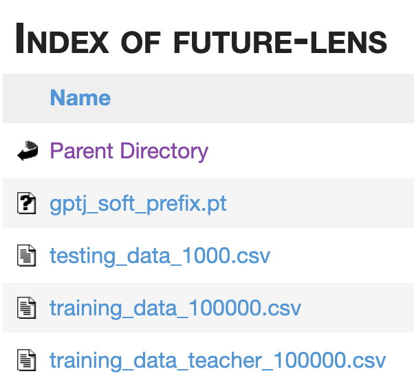
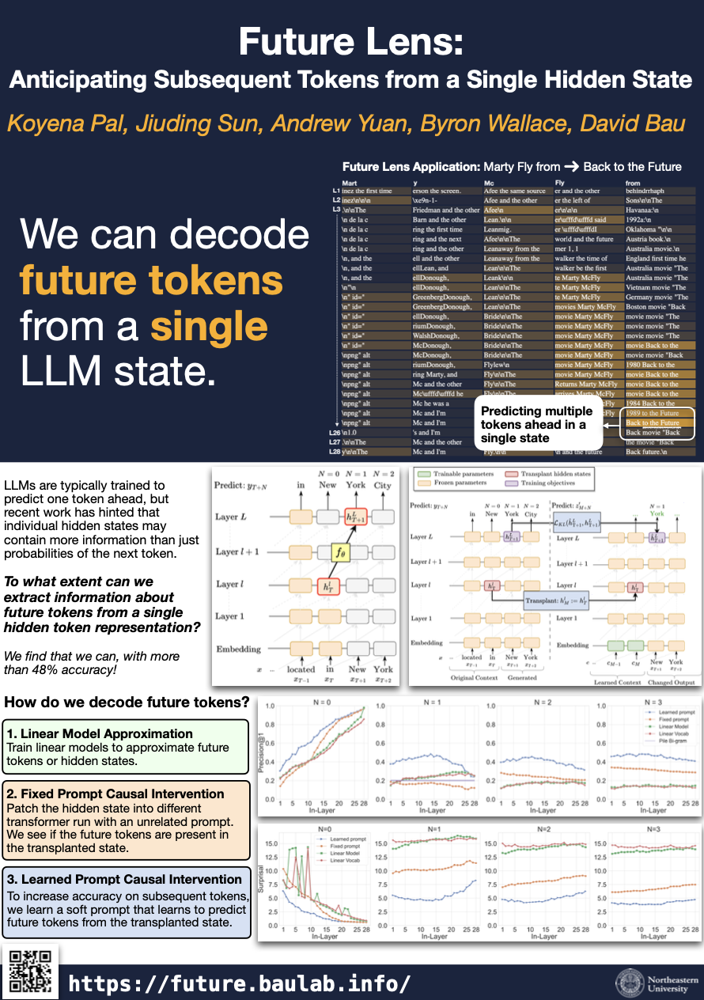
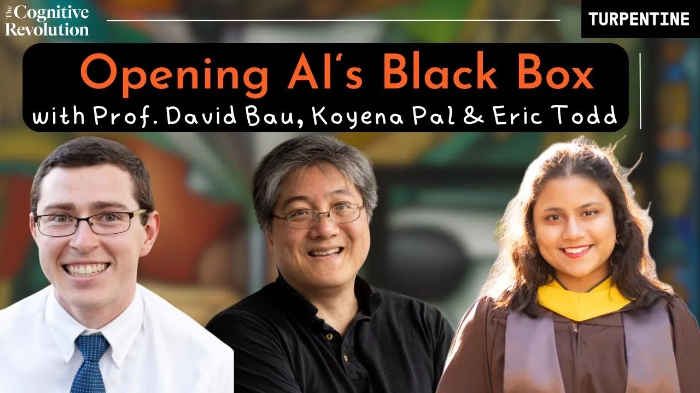
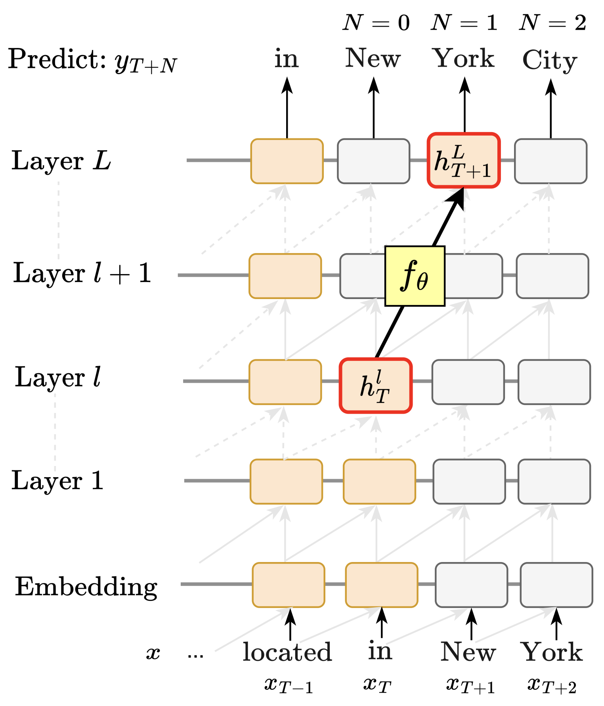
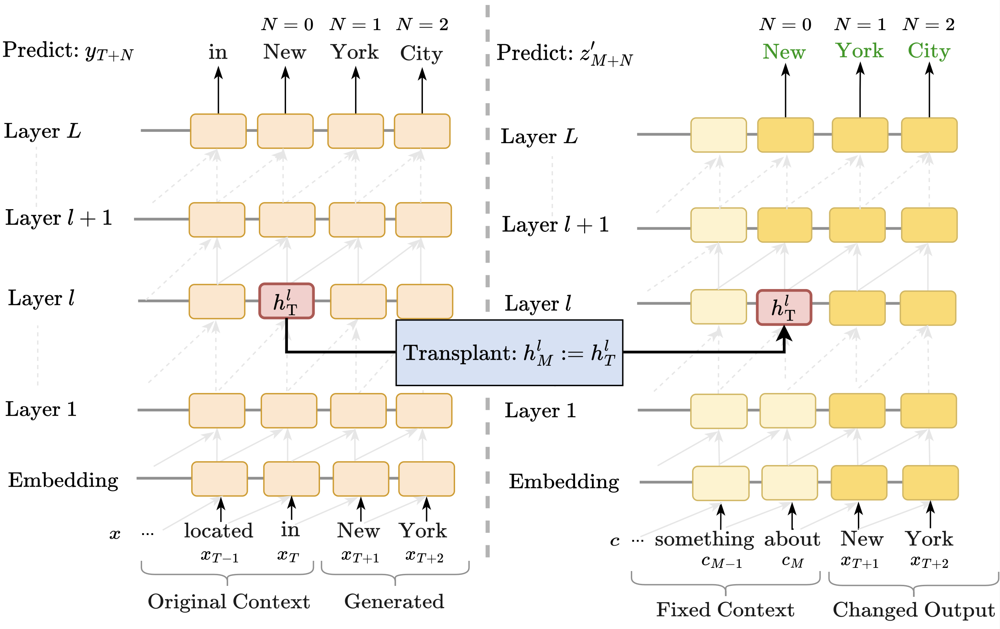
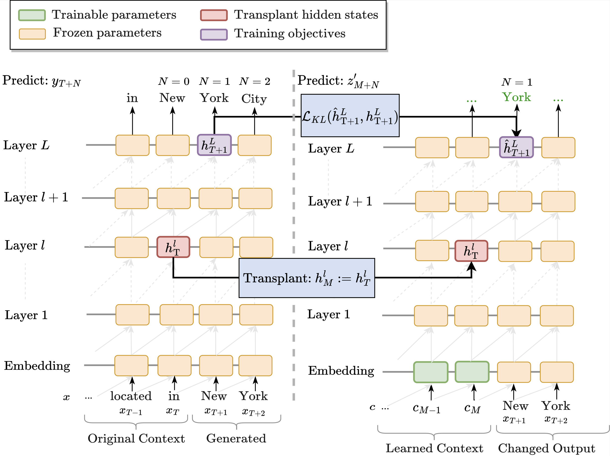
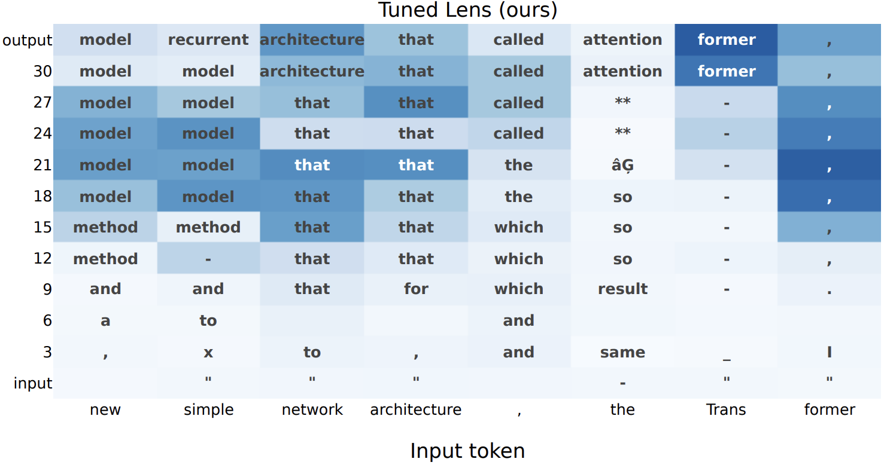
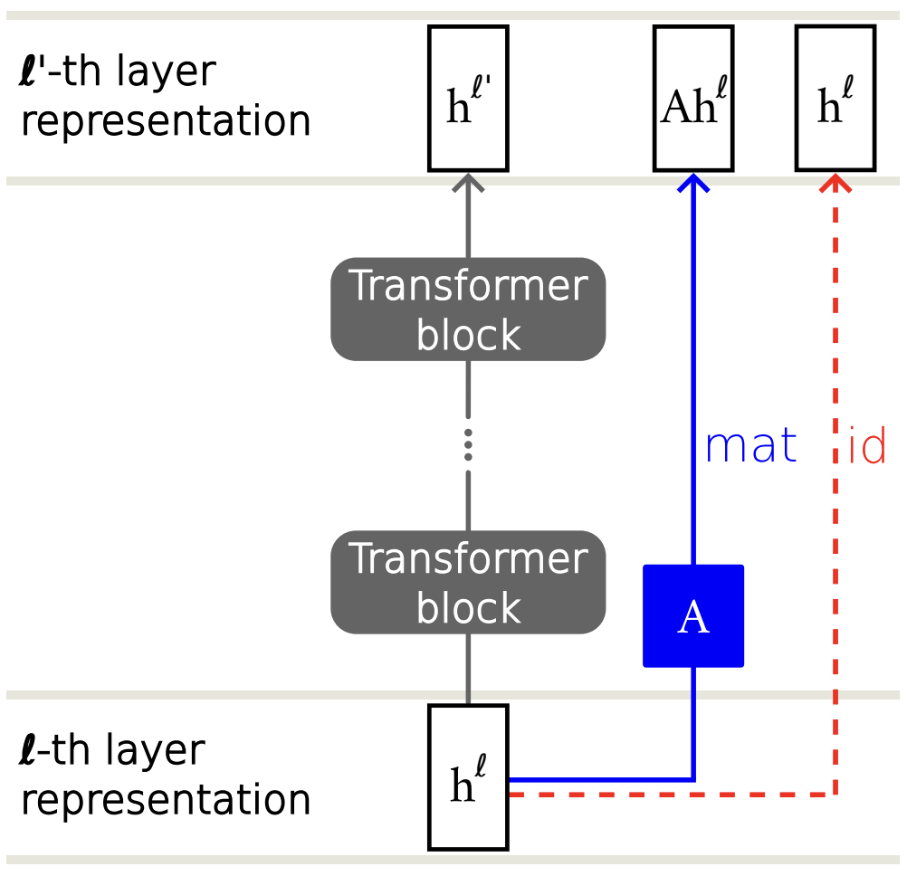
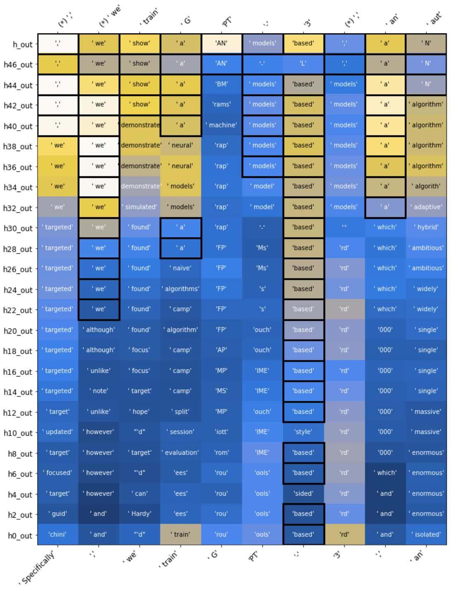

Preprint
ArXiv

Source Code
Github

Dataset
and Soft Prompt

Poster
CoNLL 2023

Youtube
(Cognitive Revolution)
Do hidden states encode distant tokens?
Auto-regressive transformer language models are typically trained to predict one token ahead, but
recent work has hinted that individual hidden states may contain more information than just probabilities of the following token.
In this work we ask:
To what extent can we extract information about future
tokens from a single hidden token representation?
The Future Lens
Each cell in the visualization here represents a single hidden state of the transformer at a single token and a single layer. Although the transformer is trained to only predict a single token ahead, we perform a multi-token decoding based only on the information within that single hidden state, revealing, for example, that after the text "Marty McFly from", the model has not only has predicted the next word Back, but that it also contains an encoding of the entire phrase Back to the Future at certain layers within the model. Our experiments reveal that distant-future information is very common: many hidden states do contain information about predicted context several tokens in the future.
How did we decode future tokens?
Each of our methods has the same goal: Extract accurate predictions of a model's probability distribution several tokens ahead, based on the information in only one hidden state at a single layer at one token of the transformer.
1. Linear Model Approximation
Extending the ideas of Tuned Lens and the Logit Lens, we train linear models to approximate future model predictions several tokens in the future, in order to reveal the extent to which individual hidden states may directly encode subsequent tokens.

2. Fixed Prompt Causal Intervention
The next method we consider involves a single state causal intervention where we transplant the hidden state hlT into the transformer while it is decoding an unrelated bit of context. The question is whether this transplantation steers the model to generate tokens related to the prefix that induced hlT. If it does, this indicates that information about subsequent tokens (in the original sequence) is prominently encoded in hlT.

3. Learned Prompt Causal Intervention
In cases where the previous method 'fails', it does not necessarily mean that the
hidden state does not encode similar information; it may just be less prominent.
To evaluate the degree to which such signal is present in these cases, we explore an approach
in which we learn to surface information about subsequent tokens from individual contextual token embeddings.

Related Work
Our work builds upon insights in other work that has examined ways to predict the next token from intermediate layers:
Nora Belrose, Zach Furman, Logan Smith, Danny Halawi, Igor Ostrovsky, Lev McKinney, Stella Biderman, Jacob Steinhardt. Eliciting Latent Predictions from Transformers with the Tuned Lens. 2023.
Notes: Analyzes transformers from the perspective of iterative inference, seeking to understand how model predictions are refined layer by layer.
Alexander Yom Din, Taelin Karidi, Leshem Choshen, Mor Geva. Jump to Conclusions: Short-Cutting Transformers With Linear Transformations. 2023.
Notes: Proposes a method for casting hidden representations across transformer layers by using linear transformations. It allows 'peeking' into early layer representations of GPT-2 and BERT, showing
that often LMs already predict the final output in early layers.
 nostalgebraist. interpreting GPT: the logit lens. 2020.
Notes: An early technique to view GPT's internals by directly decoding hidden states into vocabulary space using the model's pretrained unembedding matrix.
How to cite
This work appeared at CoNLL 2023. It can be cited as follows:
bibliography
Koyena Pal, Jiuding Sun, Andrew Yuan, Byron C. Wallace, and David Bau. "Future Lens: Anticipating Subsequent Tokens from a Single Hidden State." SIGNLL
Conference on Computational Natural Language Learning (CoNLL)
bibtex
@inproceedings{pal2023future,
title={Future Lens: Anticipating Subsequent Tokens from a Single Hidden State},
author={Pal, Koyena and Sun, Jiuding and Yuan, Andrew and Wallace, Byron C and Bau, David},
booktitle={Proceedings of the 27th Conference on Computational Natural Language Learning (CoNLL)},
pages={548--560},
year={2023}
}